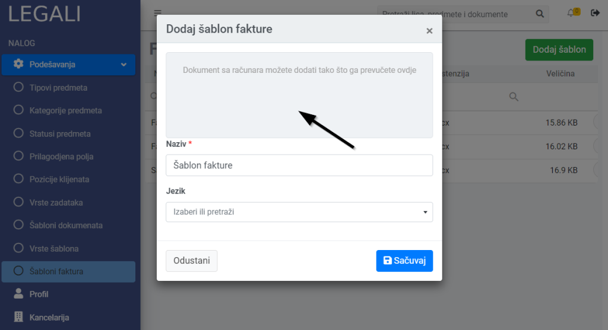
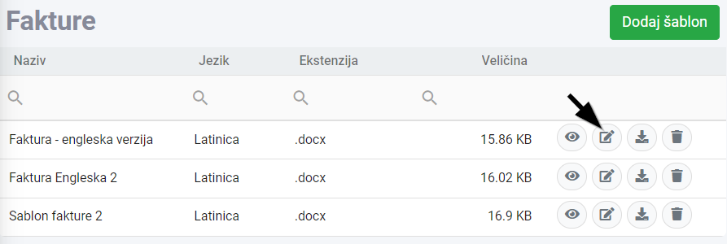
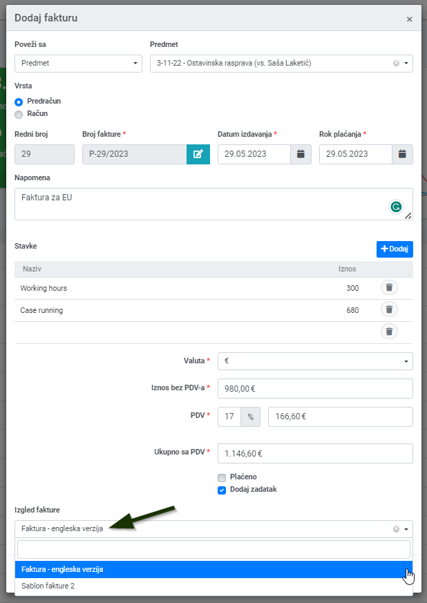
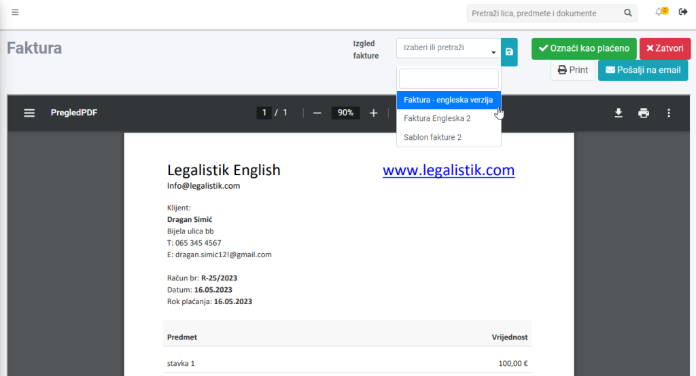

Legalistik aplikacija vam omogućava da dodate svoj šablon za fakturu, koja će se koristiti kod generisanja novih faktura. Takođe, u slučaju da različitim klijentima šaljete različite vrste faktura, sa različitim memorandumom (recimo, neke fakture su vam na engleskom), možete dodati više šablona za fakture i koristiti ih po potrebi.
1. Napravite šablon na lokalnom računaru #
U slučaju da nemate gotov šablon fakture, potrebno je da ga napravite na lokalnom računaru, kao Word dokument, gdje ćete u zaglavlje i podnožje (header i footer) staviti memorandum i osnovne podatke o kancelariji. Primjer takvog dokumenta pogledajte ovde.
2. Dodajte novi šablon u Legalistik aplikaciju #
Nakon toga u meniju na lijevoj strani idete u Podešavanja -> Šabloni faktura i tamo dodajte postojeći dokument sa vašeg računara, koji će vam služiti kao šablon za fakturu:
- Prevucite dokument na obilježeno mjesto, kao na slici ispod, ili kliknite mišem na to mjesto da vam se otvori prozor za pretragu dokumenata
- Unesite naziv za taj šablon i izaberite jezik

Kad jednom dodate šablon za fakturu, istu možete mijenjati direktno unutar Legalistik aplikacije, bez skidanja na računar i ponovnog dodavanja. Potrebno je samo da u listi šablona unutar Podešavanja -> Šabloni faktura kliknete na ikonu za izmjenu dokumenta pored šablona:

3. Izaberite šablon unutar fakture #
Sledeći put, kada budete generisali novu fakturu, na dnu forme možete izabrati šablon za tu fakturu:

Šablon postojeće fakture možete kasnije promjeniti, tako što otvorite fakturu i u padajućoj listi izaberete novi šablon i snimite klikom na ikonicu sa desne strane naziva šablona:
